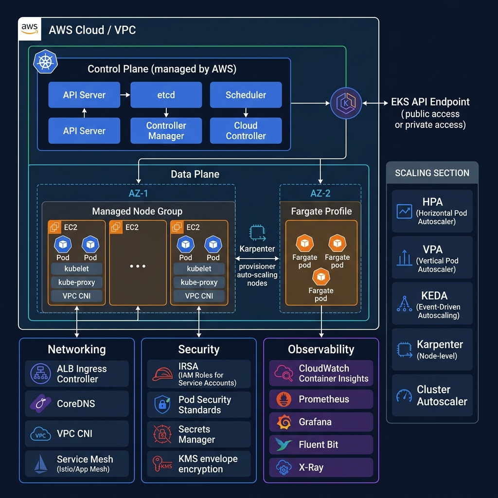

65 advanced questions covering EKS architecture, networking, autoscaling, security, observability, GitOps, and production troubleshooting — with architect-grade answers, code examples, and comparison tables.

EKS managed control plane, Kubernetes API server, etcd, scheduling, and how AWS abstracts the complexity of running production Kubernetes.
Amazon EKS is a fully managed Kubernetes service that runs the control plane (API server, etcd, scheduler, controller-manager) across three Availability Zones. AWS handles upgrades, patching, and HA for the control plane.
| Aspect | EKS (Managed) | Self-Managed on EC2 |
|---|---|---|
| Control Plane | AWS-managed, 3-AZ HA, auto-patched | You manage etcd, API server, certs, upgrades |
| etcd | Managed, encrypted, backed up | You must backup, monitor, size properly |
| Upgrades | In-place control plane + managed node group rolling updates | Manual upgrade of every component |
| Networking | VPC CNI (native VPC IPs for pods) | Any CNI (Calico, Flannel, Cilium) |
| Cost | $0.10/hr control plane + worker nodes | Only EC2 costs, but higher ops overhead |
| Best For | Production workloads, compliance, teams without deep K8s ops expertise | Custom CNI needs, air-gapped, cost-sensitive dev/test |
| Mode | Node Mgmt | Scaling | GPU/Custom AMI | Best For |
|---|---|---|---|---|
| Managed Node Group | AWS manages ASG, AMI updates | Cluster Autoscaler / Karpenter | ✅ Supported | General production workloads |
| Self-Managed | You manage ASG, AMIs, bootstrap | Manual or CA | ✅ Full control | Custom AMI, Windows nodes, special kernels |
| Fargate | Serverless — no nodes to manage | Auto per pod | ❌ No GPU | Batch jobs, burstable workloads, no node ops |
| EKS Auto Mode | AWS manages Karpenter, CoreDNS, CSI | Karpenter (built-in) | ✅ GPU supported | Teams wanting minimal ops, "just run pods" |
The Kubernetes control plane consists of five core components:
| Component | Role | EKS Management |
|---|---|---|
| kube-apiserver | REST API gateway for all K8s operations. Validates and processes requests. | HA across 3 AZs, auto-scaled, managed TLS certs |
| etcd | Distributed key-value store for cluster state | Encrypted at rest (AWS KMS), automated backups, 3-AZ replication |
| kube-scheduler | Assigns pods to nodes based on resource requests, affinity, taints/tolerations | Managed by AWS, no configuration needed |
| kube-controller-manager | Runs control loops (ReplicaSet, Deployment, Node controller) | Managed, includes AWS-specific cloud controller |
| cloud-controller-manager | Integrates K8s with AWS APIs (ELB, EBS, Route tables) | AWS manages; creates ALB/NLB, EBS volumes automatically |
public, private, or public+private endpoint access.| Mode | kubectl Access | Worker→API | Security |
|---|---|---|---|
| Public Only | Internet (filterable via CIDR) | Internet (via NAT GW) | ⚠️ Exposed surface, use CIDR allowlist |
| Private Only | VPN/Direct Connect/Bastion only | ENIs in your VPC (private) | ✅ Most secure, no internet exposure |
| Public + Private | Internet (CIDR-filtered) | ENIs in your VPC (private) | ✅ Recommended — workers use private path, admins can use public with CIDR lock |
EKS supports the latest 4 Kubernetes minor versions. AWS deprecates versions ~14 months after release. Upgrade strategy:
kubectl get --raw /apis to find deprecated APIspluto or kubent to scan manifests for removed API versionsdrift policy to auto-replace nodes when AMI changes. Karpenter cordons, drains, and replaces nodes with zero manual intervention.# Check deprecated APIs before upgrade kubectl get --raw /metrics | grep apiserver_requested_deprecated_apis # Upgrade control plane aws eks update-cluster-version \ --name my-cluster \ --kubernetes-version "1.30" # Upgrade managed node group aws eks update-nodegroup-version \ --cluster-name my-cluster \ --nodegroup-name workers
Deep dive into pod scheduling, node lifecycle, container runtimes, and EKS-specific data plane configurations.
kubectl apply -f deployment.yaml — from API server to pod running on a node.| Workload Type | Identity | Storage | Scaling | Use Case |
|---|---|---|---|---|
| Deployment | Interchangeable pods | Ephemeral | HPA/KEDA | Stateless web services, APIs, microservices |
| StatefulSet | Stable network IDs (pod-0, pod-1) | PVC per pod | Manual/ordered | Databases, Kafka, Elasticsearch, Zookeeper |
| DaemonSet | One pod per node | Host path / ephemeral | Auto (node count) | Log collectors (Fluent Bit), monitoring agents, CNI plugins |
| Job / CronJob | Run-to-completion | Ephemeral | Parallelism setting | Batch processing, DB migrations, scheduled reports |
Taints repel pods from nodes. Tolerations allow pods to schedule on tainted nodes. Node affinity attracts pods to specific nodes.
# Taint nodes for team-a kubectl taint nodes team-a-pool team=a:NoSchedule # Pod spec with toleration + affinity spec: tolerations: - key: "team" operator: "Equal" value: "a" effect: "NoSchedule" affinity: nodeAffinity: requiredDuringSchedulingIgnoredDuringExecution: nodeSelectorTerms: - matchExpressions: - key: "team" operator: In values: ["a"]
Topology Spread Constraints distribute pods evenly across failure domains (AZs, nodes) to prevent all replicas from landing on the same node or AZ.
spec: topologySpreadConstraints: - maxSkew: 1 topologyKey: "topology.kubernetes.io/zone" whenUnsatisfiable: DoNotSchedule labelSelector: matchLabels: app: "payment-service" - maxSkew: 1 topologyKey: "kubernetes.io/hostname" whenUnsatisfiable: ScheduleAnyway
maxSkew: 1 means the difference in pod count between any two zones is at most 1. With 3 replicas across 3 AZs, you get 1-1-1 distribution. If an AZ goes down, 2 replicas survive.
minAvailable: 2 or maxUnavailable: 1) to prevent voluntary disruptions (upgrades, scaling) from taking down too many replicas simultaneously.| Aspect | Requests | Limits |
|---|---|---|
| Purpose | Guaranteed minimum — used for scheduling decisions | Hard ceiling — enforced at runtime |
| CPU Exceeded | N/A | Pod is CPU-throttled (not killed) |
| Memory Exceeded | N/A | Container is OOMKilled by the kernel |
| QoS Class | requests == limits → Guaranteed | requests < limits → Burstable | no requests/limits → BestEffort | |
Pod networking, service discovery, load balancing, and service mesh — the networking foundation every EKS architect must master.
How AWS VPC CNI assigns real VPC IPs to pods, ENI limits, prefix delegation, custom networking, and network policies.
The VPC CNI plugin assigns real VPC IP addresses from the node's subnet to each pod via secondary IPs on Elastic Network Interfaces (ENIs).
ENI Limits: Each EC2 instance type has a max number of ENIs and IPs per ENI. For example, m5.large = 3 ENIs × 10 IPs = 29 pod IPs (minus node IPs). This limits pod density per node.
ENABLE_PREFIX_DELEGATION=true on VPC CNI. Instead of assigning individual IPs, each ENI slot gets a /28 prefix (16 IPs). This 16x increases pod density per node.
kubectl set env daemonset aws-node -n kube-system \ ENABLE_PREFIX_DELEGATION="true" \ WARM_PREFIX_TARGET="1"
AWS_VPC_K8S_CNI_CUSTOM_NETWORK_CFG=true — pods use subnets different from the node's subnet. Keeps node IPs separate from pod IPs.Network Policies are K8s resources that control pod-to-pod traffic (L3/L4). They act as firewalls at the pod level. VPC CNI alone does NOT enforce Network Policies — you need an additional plugin.
Options for EKS:
ENABLE_NETWORK_POLICY=true.# Default deny all ingress in a namespace apiVersion: networking.k8s.io/v1 kind: NetworkPolicy metadata: name: deny-all-ingress namespace: production spec: podSelector: {} # applies to all pods policyTypes: [Ingress] # empty ingress = deny all
Security Groups for Pods (SGP) allow you to assign AWS VPC Security Groups directly to individual pods, not just nodes. This enables fine-grained, VPC-native L3/L4 access control.
| Feature | Security Groups for Pods | K8s Network Policies |
|---|---|---|
| Scope | VPC-level (AWS-native) | Cluster-level (K8s-native) |
| Controls | Pod ↔ RDS, ElastiCache, other AWS services | Pod ↔ Pod within cluster |
| L7 Support | No (L3/L4 only) | Yes (with Cilium/Calico) |
| Best For | Controlling pod access to AWS resources (databases, queues) | East-west traffic control within the cluster |
payment-service pods can reach the payment database). Network Policies for pod-to-pod isolation within the cluster.CoreDNS runs as a Deployment in kube-system. It serves DNS for service discovery (my-svc.my-ns.svc.cluster.local). Each node's kubelet configures pods to use CoreDNS ClusterIP (usually 10.100.0.10) as the DNS server.
Troubleshooting DNS failures:
kubectl get pods -n kube-system -l k8s-app=kube-dns — are they running? OOMKilled?kubectl logs -n kube-system -l k8s-app=kube-dns — look for SERVFAIL, timeout, loop detectioncluster-proportional-autoscaler to auto-scale CoreDNS based on node/pod countndots:5 causes 4-8 DNS lookups per external name. Set ndots:2 in pod spec or use fully-qualified names with trailing dot (api.example.com.)Service types, ALB/NLB Ingress, AWS Load Balancer Controller, and service mesh patterns for production EKS.
| Type | Exposure | Cost | Use Case |
|---|---|---|---|
| ClusterIP | Internal only (within cluster) | Free | Service-to-service communication |
| NodePort | Static port on every node (30000-32767) | Free | Testing, direct node access |
| LoadBalancer | 1 AWS ELB per service | $$$ (per LB) | Simple setups, NLB for TCP/gRPC |
| Ingress | 1 ALB shared across many services | $ (single LB) | ✅ Production — path/host routing |
Production pattern: Use the AWS Load Balancer Controller with Ingress resources. One ALB handles path-based and host-based routing to hundreds of services. Use NLB (LoadBalancer type) only for TCP/UDP workloads (gRPC, game servers, MQTT).
The AWS Load Balancer Controller (formerly ALB Ingress Controller) is an out-of-tree controller that watches for Ingress and Service resources and provisions AWS ALBs/NLBs.
# Ingress with AWS LB Controller — ALB with IP mode apiVersion: networking.k8s.io/v1 kind: Ingress metadata: name: api-ingress annotations: alb.ingress.kubernetes.io/scheme: internet-facing alb.ingress.kubernetes.io/target-type: ip alb.ingress.kubernetes.io/wafv2-acl-arn: arn:aws:wafv2:...
| Mesh | Data Plane | Complexity | mTLS | EKS Integration |
|---|---|---|---|---|
| Istio | Envoy sidecar | High (complex CRDs) | ✅ Auto | Good, but heavy resource usage |
| App Mesh | Envoy sidecar (AWS-managed) | Medium | ✅ Auto | Native AWS, CloudMap integration |
| Linkerd | Rust micro-proxy | Low | ✅ Auto | Lightweight, fast, easy to adopt |
Gateway API is the next-generation successor to Ingress. It provides a more expressive, role-oriented, and portable traffic routing model.
| Feature | Ingress | Gateway API |
|---|---|---|
| Routing | Host/path only | Host, path, headers, query params, method |
| Protocols | HTTP/HTTPS | HTTP, HTTPS, TCP, UDP, gRPC, TLS |
| Role Model | Single resource | GatewayClass → Gateway → HTTPRoute (infra admin → cluster ops → app dev) |
| Traffic Splitting | Requires annotations | Native weighted routing |
| EKS Support | Stable, widely used | GA since K8s 1.27, AWS LB Controller supports it |
Migration recommendation: For new projects, adopt Gateway API. For existing clusters, migrate gradually — both can coexist.
gRPC uses HTTP/2 with long-lived connections. This affects load balancing strategy:
alb.ingress.kubernetes.io/backend-protocol-version: GRPC.# ALB Ingress for gRPC metadata: annotations: alb.ingress.kubernetes.io/backend-protocol-version: GRPC alb.ingress.kubernetes.io/target-type: ip alb.ingress.kubernetes.io/healthcheck-protocol: HTTP alb.ingress.kubernetes.io/healthcheck-path: /grpc.health.v1.Health/Check
Pod-level and node-level autoscaling strategies for production EKS clusters — from reactive scaling to event-driven architectures.
Horizontal Pod Autoscaler, Vertical Pod Autoscaler, and KEDA for event-driven scaling — when to use each and how they work together.
| Scaler | What it Scales | Trigger | Speed | Use Case |
|---|---|---|---|---|
| HPA | Pod count (horizontal) | CPU, memory, custom metrics | 15-30s | Web services, APIs |
| VPA | Pod resources (vertical) | Historical usage patterns | Minutes (restarts pod) | Right-sizing requests/limits |
| KEDA | Pod count (event-driven) | SQS queue depth, Kafka lag, custom | Seconds | Queue consumers, event processors |
recommend mode alongside HPA — VPA suggests optimal requests/limits, you apply them manually.HPA can scale based on custom metrics via the Prometheus Adapter or KEDA. The flow: App → Prometheus scrapes metrics → Prometheus Adapter exposes them via K8s custom metrics API → HPA reads and scales.
# HPA with custom Prometheus metric (requests per second) apiVersion: autoscaling/v2 kind: HorizontalPodAutoscaler metadata: name: api-hpa spec: scaleTargetRef: apiVersion: apps/v1 kind: Deployment name: api-server minReplicas: 3 maxReplicas: 100 metrics: - type: Pods pods: metric: name: http_requests_per_second target: type: AverageValue averageValue: "1000" # scale up when >1000 RPS per pod behavior: scaleDown: stabilizationWindowSeconds: 300 # wait 5 min before scaling down scaleUp: stabilizationWindowSeconds: 0 # scale up immediately
KEDA (Kubernetes Event-Driven Autoscaling) extends K8s with event-driven scaling. Unlike HPA, KEDA can scale deployments to zero pods and back — critical for cost optimization.
# KEDA ScaledObject for SQS consumer apiVersion: keda.sh/v1alpha1 kind: ScaledObject metadata: name: order-processor spec: scaleTargetRef: name: order-processor minReplicaCount: 0 # scale to zero when queue is empty maxReplicaCount: 50 cooldownPeriod: 60 pollingInterval: 5 triggers: - type: aws-sqs-queue metadata: queueURL: https://sqs.us-east-1.amazonaws.com/123/orders queueLength: "10" # 1 pod per 10 messages awsRegion: us-east-1 authenticationRef: name: keda-aws-creds # uses IRSA
How it works: KEDA polls SQS every 5 seconds. At 0 messages → 0 pods. At 50 messages → 5 pods (50/10). At 500 messages → 50 pods (capped at max). When queue drains → cooldown 60s → scale to zero.
VPA (Vertical Pod Autoscaler) analyzes historical resource usage and recommends (or auto-applies) optimal CPU/memory requests and limits.
VPA Modes:
Off — Only calculates recommendations (view via kubectl describe vpa)Initial — Sets requests at pod creation only, no restartsRecreate — Evicts and recreates pods with updated requests (causes brief downtime)Auto — Same as Recreate (currently), may support in-place resize in futureConflict with HPA: If both VPA (auto) and HPA target CPU, VPA increases pod CPU requests → HPA sees lower CPU utilization → scales down pods → VPA increases requests again → oscillation loop. Solution: Use VPA in Off mode alongside HPA, apply VPA recommendations manually during maintenance windows.
HPA behavior lets you control the speed and stability of scaling decisions:
Max (most aggressive), Min (most conservative), Disabled (no scaling in that direction).Karpenter vs Cluster Autoscaler, NodePools, consolidation, drift detection, and Spot instance management.
| Feature | Karpenter | Cluster Autoscaler |
|---|---|---|
| Architecture | Group-less — provisions optimal instance per pod | ASG-based — scales existing node groups |
| Instance Selection | Automatic — picks best instance type from 340+ options | Fixed per node group — you define instance types |
| Scaling Speed | Seconds (direct EC2 API calls) | Minutes (ASG scaling cycle) |
| Consolidation | Built-in — bin-packs and replaces under-utilized nodes | No built-in consolidation |
| Drift Detection | Auto-detects and replaces nodes when AMI, config changes | No drift detection |
| Spot Management | Native Spot interruption handling with automatic replacement | Requires separate Spot handler |
| EKS Auto Mode | ✅ Built-in (managed by AWS) | ❌ Not included |
apiVersion: karpenter.sh/v1 kind: NodePool metadata: name: general spec: template: spec: requirements: - key: "karpenter.sh/capacity-type" operator: In values: ["spot", "on-demand"] - key: "kubernetes.io/arch" operator: In values: ["arm64", "amd64"] # prefers Graviton (arm64) for cost - key: "karpenter.k8s.aws/instance-category" operator: In values: ["m", "c", "r"] - key: "karpenter.k8s.aws/instance-generation" operator: Gte values: ["6"] # only 6th gen or newer nodeClassRef: group: karpenter.k8s.aws kind: EC2NodeClass name: default limits: cpu: "1000" # max 1000 vCPUs total memory: "2000Gi" disruption: consolidationPolicy: WhenEmptyOrUnderutilized consolidateAfter: 30s
Karpenter has native Spot interruption handling:
topologySpreadConstraints across AZs. Always have a mix of Spot + On-Demand. Critical workloads (databases, payment processing) should be On-Demand only — use karpenter.sh/capacity-type: on-demand in pod spec.| Policy | Behavior | Risk Level |
|---|---|---|
| WhenEmpty | Only removes nodes with zero pods (after daemonsets) | Low — very safe, no pod disruption |
| WhenEmptyOrUnderutilized | Actively bin-packs: replaces multiple under-utilized nodes with fewer right-sized ones | Medium — causes pod rescheduling, respects PDBs |
How consolidation works: Karpenter continuously evaluates if the current set of nodes is optimal. If 3 nodes are running at 20% utilization, it can replace them with 1 larger node — saving 2 nodes worth of cost. It cordons, drains, and terminates the old nodes while ensuring pods move safely.
Node cold start = ~60-90 seconds (EC2 launch + kubelet registration + CNI setup). Strategies to reduce impact:
# Pause pod for over-provisioning spec: priorityClassName: overprovisioning # low priority containers: - name: pause image: registry.k8s.io/pause:3.9 resources: requests: cpu: "2" memory: "4Gi"
Identity, access management, secrets, image security, and compliance patterns for production EKS clusters.
IRSA, EKS Pod Identity, RBAC design, aws-auth ConfigMap, and EKS access entries for enterprise cluster security.
IRSA maps a Kubernetes ServiceAccount to an IAM Role, allowing pods to assume AWS IAM roles without using node-level IAM roles or hardcoded credentials.
How it works:
eks.amazonaws.com/role-arnAssumeRoleWithWebIdentity# ServiceAccount with IRSA apiVersion: v1 kind: ServiceAccount metadata: name: s3-reader namespace: data-team annotations: eks.amazonaws.com/role-arn: arn:aws:iam::123:role/S3ReadOnly
| Feature | IRSA | EKS Pod Identity (2023+) |
|---|---|---|
| Setup | OIDC provider + IAM role trust policy with conditions | EKS Pod Identity association (simpler API) |
| Cross-Account | Complex — requires OIDC trust in target account | Simpler — uses EKS Pod Identity Agent |
| Scalability | IAM trust policy has 4KB limit (limits service accounts) | No trust policy limit |
| Recommendation | Works everywhere, mature | ✅ Preferred for new clusters — simpler, more scalable |
Migration: Existing IRSA setups continue to work. For new clusters, use EKS Pod Identity. Both can coexist — migrate service accounts incrementally.
# 1. Namespace-scoped Role for app teams apiVersion: rbac.authorization.k8s.io/v1 kind: Role metadata: name: app-developer namespace: backend rules: - apiGroups: ["", "apps", "batch"] resources: ["pods", "deployments", "services", "configmaps", "jobs"] verbs: ["get", "list", "watch", "create", "update", "delete"] - apiGroups: [""] resources: ["secrets"] verbs: ["get", "list"] # read-only for secrets # 2. ClusterRole for platform team apiVersion: rbac.authorization.k8s.io/v1 kind: ClusterRole metadata: name: platform-admin rules: - apiGroups: ["*"] resources: ["*"] verbs: ["*"] # 3. Map IAM roles to K8s groups via EKS Access Entries # aws eks create-access-entry \ # --cluster-name prod \ # --principal-arn arn:aws:iam::123:role/BackendDevRole \ # --kubernetes-groups backend-devs
API_AND_CONFIG_MAP authentication mode first (supports both). Migrate entries from aws-auth to Access Entries. Once fully migrated, switch to API mode to deprecate the ConfigMap.| Approach | Encryption | Rotation | Complexity | Best For |
|---|---|---|---|---|
| K8s Secrets (default) | Base64 only (not encrypted!) | Manual | Low | Non-sensitive config |
| K8s Secrets + KMS Envelope | Encrypted at rest in etcd | Manual | Low | Better than default |
| External Secrets Operator | Stored in AWS SM, synced to K8s | Auto-sync | Medium | Centralized secret management |
| Secrets Store CSI Driver | Mounted as files, never in etcd | Auto-rotation | Medium | ✅ Most secure — secrets never stored in K8s |
Pod Security Standards, OPA/Gatekeeper, image scanning, supply chain security, and runtime threat detection.
PodSecurityPolicies (PSP) were removed in K8s 1.25. Pod Security Standards (PSS) are the replacement, enforced via the Pod Security Admission controller.
| Level | Policy | Use Case |
|---|---|---|
| Privileged | No restrictions | System components, CNI plugins |
| Baseline | Prevents known privilege escalations | General workloads |
| Restricted | Hardened — no root, read-only fs, drop all capabilities | Sensitive/production workloads |
# Enforce restricted on a namespace kubectl label namespace production \ pod-security.kubernetes.io/enforce=restricted \ pod-security.kubernetes.io/warn=restricted \ pod-security.kubernetes.io/audit=restricted
OPA Gatekeeper is a policy engine that enforces custom policies via admission webhooks. While PSS handles basic security levels, Gatekeeper enables fine-grained, organization-specific policies.
Example policies:
latest tag allowed — require specific image digestsrestricted for security fundamentals + Gatekeeper for business rules (naming conventions, approved registries, required labels).cosign to sign images. Verify signatures via Kyverno/Gatekeeper admission policy.# Hardened pod security context spec: securityContext: runAsNonRoot: true runAsUser: 1000 runAsGroup: 3000 fsGroup: 2000 seccompProfile: type: RuntimeDefault containers: - name: app securityContext: allowPrivilegeEscalation: false readOnlyRootFilesystem: true capabilities: drop: ["ALL"] volumeMounts: - name: tmp mountPath: /tmp # writable tmp dir volumes: - name: tmp emptyDir: {}
GuardDuty EKS Protection monitors Kubernetes audit logs and runtime activity to detect threats:
PrivilegeEscalation:Kubernetes/PrivilegedContainer — container running as privilegedCryptoCurrency:Runtime/BitcoinTool.B — crypto mining detectedUnauthorizedAccess:Kubernetes/AnonymousAccessGranted — anonymous auth enabledProduction-grade monitoring, logging, and distributed tracing for EKS clusters using AWS-native and open-source tools.
Prometheus, Grafana, Fluent Bit, OpenTelemetry, CloudWatch Container Insights, and distributed tracing for production EKS.
Key Metrics to Monitor:
| Layer | Metrics | Alert Threshold |
|---|---|---|
| Cluster | Node count, pending pods, API server latency | Pending pods > 0 for 5min |
| Node | CPU/memory utilization, disk pressure, network I/O | CPU > 85% for 10min |
| Pod | Restart count, OOMKills, CPU throttling | Restarts > 3 in 5min |
| Application | Request latency (p50/p95/p99), error rate, throughput | p99 > 500ms, error rate > 1% |
| Karpenter | Nodes created/terminated, consolidation events, disruption budget | Unschedulable pods > 0 |
ADOT is AWS's distribution of the OpenTelemetry project. It provides a single collector that handles metrics, traces, and logs — replacing the need for separate agents (Prometheus + Jaeger + Fluent Bit).
EKS Integration: Deploy ADOT as a DaemonSet (per-node) or Sidecar (per-pod). It scrapes Prometheus metrics, receives OTLP traces, and exports to AMP (metrics), X-Ray (traces), and CloudWatch (logs).
Structured JSON logging enables automated parsing, filtering, and alerting. Unstructured logs require regex patterns that break with format changes.
// Application log output (JSON) { "timestamp": "2025-08-03T10:15:30Z", "level": "ERROR", "service": "payment-api", "trace_id": "abc123def456", "message": "Payment processing failed", "error": "timeout after 5s", "customer_id": "cust_789", "amount": 99.99 }
Fluent Bit pipeline: Fluent Bit (DaemonSet) → reads from /var/log/containers/*.log → enriches with K8s metadata (pod name, namespace, labels) → routes to CloudWatch Logs (operational) + S3 (archive) + OpenSearch (search).
# 1. Check pod status and events kubectl describe pod <pod-name> -n <namespace> # Look for: OOMKilled, ImagePullBackOff, FailedScheduling # 2. Check previous container logs (crashed container) kubectl logs <pod-name> --previous -n <namespace> # 3. Check resource limits — is it OOMKilled? kubectl get pod <pod-name> -o jsonpath='{.status.containerStatuses[*].lastState}' # 4. If image issue — verify image exists and is pullable kubectl get events -n <namespace> --field-selector involvedObject.name=<pod-name> # 5. Interactive debug — run ephemeral debug container kubectl debug -it <pod-name> --image=busybox --target=<container-name> # 6. Check node resources — is the node under pressure? kubectl top node kubectl describe node <node-name> | grep -A5 "Conditions"
| Log Type | Contents | Enable? |
|---|---|---|
| Audit | Every API request — who did what, when (critical for compliance) | ✅ Always |
| Authenticator | IAM authentication attempts — login failures, IRSA issues | ✅ Always |
| API Server | API server processing logs — useful for debugging API issues | Enable for troubleshooting |
| Controller Manager | Control loop operations — ReplicaSet scaling, node lifecycle | Enable for troubleshooting |
| Scheduler | Pod scheduling decisions — why pods are/aren't placed | Enable for troubleshooting |
Logs go to CloudWatch Logs group /aws/eks/<cluster-name>/cluster. Use CloudWatch Logs Insights to query audit logs for security investigations.
traceparent, X-Amzn-Trace-Id) are propagated across service calls.Decision: Use Container Insights for small clusters (<50 nodes) or teams without Prometheus expertise. Use AMP + AMG for large clusters, custom metrics needs, or cost optimization at scale.
GitOps workflows, progressive delivery, Helm chart management, and CI/CD pipeline design for enterprise Kubernetes.
GitOps principles, ArgoCD architecture, Helm chart management, progressive delivery with Argo Rollouts, and multi-cluster deployment strategies.
GitOps uses Git as the single source of truth for declarative infrastructure and application code. A GitOps operator (ArgoCD/Flux) continuously reconciles the cluster state with the Git repository.
cosign| Strategy | Mechanism | Rollback Speed | Resource Cost | Best For |
|---|---|---|---|---|
| Rolling (native) | Gradually replace old pods with new | Slow (re-rollout) | Low (no extra) | Simple apps, internal services |
| Blue/Green | Full new version alongside old, switch traffic | Instant (switch back) | High (2× pods) | Critical services needing instant rollback |
| Canary | Route % of traffic to new version, analyze metrics | Fast (route back to old) | Medium (% extra) | ✅ Production — data-driven rollouts |
Argo Rollouts: Extends native Deployment with canary + analysis. Integrates with Prometheus — automatically promotes or rolls back based on error rates, latency. Native Deployment only supports rolling updates.
Enterprise pattern: Use Helm for third-party charts (ingress controller, Prometheus, Karpenter). Use Kustomize for internal microservices (base + per-environment overlays). ArgoCD supports both natively.
Use ArgoCD ApplicationSets to generate Applications for multiple clusters from a single template:
apiVersion: argoproj.io/v1alpha1 kind: ApplicationSet metadata: name: payment-service spec: generators: - list: elements: - cluster: dev url: https://eks-dev.us-east-1... - cluster: staging url: https://eks-staging.us-east-1... - cluster: prod-east url: https://eks-prod.us-east-1... - cluster: prod-west url: https://eks-prod.us-west-2... template: spec: source: repoURL: https://github.com/org/gitops path: apps/payment/overlays/{{cluster}} destination: server: "{{url}}" namespace: payment
Database migrations must be backward-compatible (expand-contract pattern):
initContainers or Helm pre-upgrade hook.# Helm pre-upgrade hook for DB migration apiVersion: batch/v1 kind: Job metadata: name: db-migrate annotations: "helm.sh/hook": pre-upgrade "helm.sh/hook-weight": "-1" "helm.sh/hook-delete-policy": hook-succeeded
The App-of-Apps pattern is a root ArgoCD Application that manages other Applications. It provides a hierarchical, declarative way to bootstrap an entire cluster's workloads.
apiVersion: argoproj.io/v1alpha1 kind: Rollout metadata: name: api-server spec: strategy: canary: steps: - setWeight: 5 # 5% traffic to canary - pause: {duration: 2m} - analysis: # run Prometheus analysis templates: - templateName: success-rate - setWeight: 25 # if analysis passes, 25% - pause: {duration: 5m} - setWeight: 50 - pause: {duration: 5m} - setWeight: 100 # full rollout # AnalysisTemplate — auto-rollback if error rate > 1% apiVersion: argoproj.io/v1alpha1 kind: AnalysisTemplate metadata: name: success-rate spec: metrics: - name: error-rate successCondition: "result[0] < 0.01" provider: prometheus: address: http://prometheus:9090 query: | sum(rate(http_requests_total{status=~"5.*",app="api-server"}[5m])) / sum(rate(http_requests_total{app="api-server"}[5m]))
Production troubleshooting, disaster recovery, multi-region architecture, and cost optimization patterns for senior architects.
Troubleshooting production issues, disaster recovery, multi-region EKS, cost optimization, and senior architect scenario questions.
apiserver_request_duration_seconds. Is it all requests or specific verbs (LIST, WATCH)?etcd_request_duration_seconds spikes. Large etcd database (>8GB) can slow writes.apiserver_admission_webhook_admission_duration_seconds.429 Too Many Requests in audit logs.failurePolicy: Ignore to non-critical webhooks and set timeoutSeconds: 5. For long-term, optimize webhook performance or eliminate unnecessary ones.Key principle: Each region must be self-sufficient. No synchronous cross-region calls. Use async replication for data. Design services to handle eventual consistency.
| Component | Backup Strategy | Recovery |
|---|---|---|
| Cluster Config | Terraform/CDK state in S3 (versioned) | terraform apply (rebuild cluster) |
| Workload Definitions | Git repo (ArgoCD GitOps) | ArgoCD sync to new cluster |
| Persistent Volumes | Velero + EBS snapshots (scheduled) | Velero restore from snapshots |
| Secrets | AWS Secrets Manager (multi-region) | External Secrets Operator syncs to new cluster |
| Database | Aurora Global DB / DynamoDB Global Tables | Promote read replica to writer |
WhenEmptyOrUnderutilized — removes under-utilized nodes automatically. Saving: 20-40%.kubectl top pod shows it's using less than its memory limit. What's happening?kubectl top shows RSS (Resident Set Size) — the working set. But the kernel OOM killer looks at total memory usage including:
Fix: Check cat /sys/fs/cgroup/memory/memory.usage_in_bytes inside the container — this shows the real cgroup memory usage. Increase limits to account for kernel/cache overhead. For JVM apps, set -XX:MaxRAMPercentage=75 to leave room for non-heap memory.
PDBs limit the number of pods that can be simultaneously unavailable during voluntary disruptions (node upgrades, Karpenter consolidation, kubectl drain).
apiVersion: policy/v1 kind: PodDisruptionBudget metadata: name: api-pdb spec: minAvailable: 2 # OR maxUnavailable: 1 selector: matchLabels: app: api-server
Critical for: Karpenter consolidation (respects PDBs before draining nodes), EKS node group upgrades, cluster autoscaler scale-down. Without PDBs, all pods could be evicted simultaneously during a rolling upgrade.
Decision framework: Use managed services for business-critical data stores (payment DB, customer data). Self-managed on K8s is acceptable for: non-critical caches, development environments, workloads requiring custom configurations not available in managed services.
| Control | Implementation |
|---|---|
| Encryption at rest | EKS envelope encryption for etcd (KMS), EBS encryption, S3 encryption |
| Encryption in transit | mTLS via service mesh or VPC CNI network policy, TLS on Ingress |
| Access control | RBAC with least privilege, IRSA for AWS access, private API endpoint |
| Audit logging | EKS audit logs → CloudWatch, CloudTrail for API calls |
| Network segmentation | Network policies, private subnets, security groups for pods |
| Image security | ECR scanning, signed images, Gatekeeper admission policies |
| Runtime protection | GuardDuty EKS, Falco for runtime threat detection |
| Secrets management | AWS Secrets Manager with CSI driver, no secrets in Git |
| Compliance scanning | kube-bench (CIS benchmarks), Prowler for AWS-level checks |
| Factor | EKS | ECS | Lambda |
|---|---|---|---|
| Team K8s Expertise | Required | Not needed | Not needed |
| Portability | ✅ Multi-cloud (K8s is portable) | ❌ AWS-only | ❌ AWS-only |
| Scaling | HPA/VPA/KEDA/Karpenter | ASG + Target Tracking | Auto (per request) |
| Ops Overhead | High (control plane, add-ons, networking) | Medium (task definitions, services) | Low (just code) |
| Cost at Scale | Lowest (Spot + Graviton + consolidation) | Medium | Can be expensive at high throughput |
| Ecosystem | Massive (CNCF tools, operators, mesh) | AWS ecosystem | AWS ecosystem |
| Best For | Complex microservices, multi-cloud, advanced networking | Simpler container workloads, AWS-native teams | Event-driven, glue logic, APIs <15min |